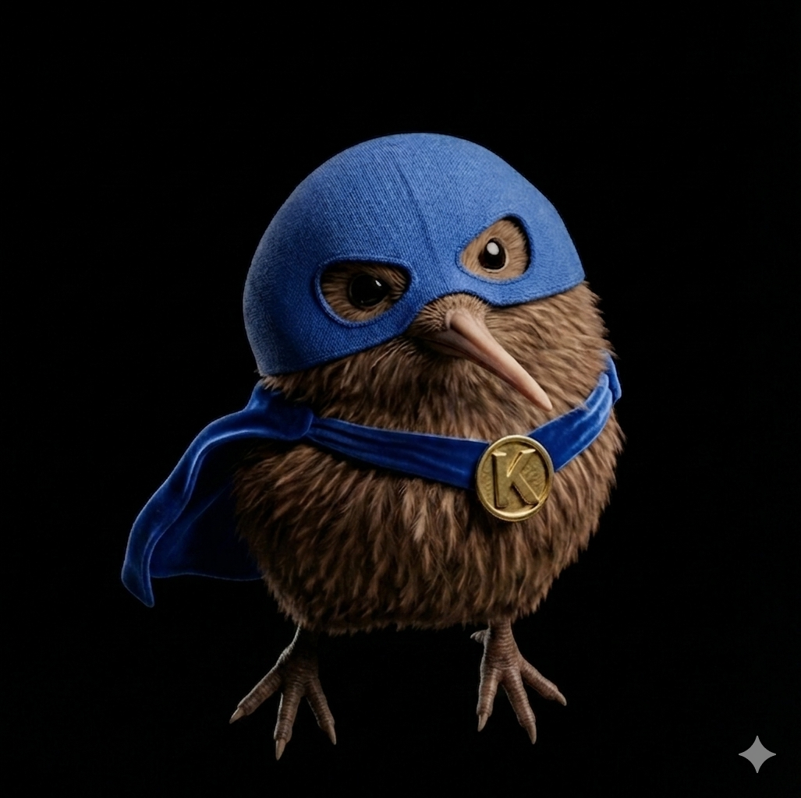

Daniel Pozo
Construyendo Infraestructuras Digitales Seguras y Eficientes
Sobre Mí
Técnico en Sistemas Microinformáticos y Redes con una profunda vocación por el desarrollo de software estructurado y la automatización inteligente de sistemas.
Me especializo en el despliegue de soluciones de infraestructura sólidas, la resolución de contingencias críticas en redes y el desarrollo de aplicaciones nativas enfocadas a optimizar flujos de trabajo cotidianos.

Proyectos
Sistemas y Redes
Gestión de infraestructura IT, administración avanzada de entornos operativos, monitorización de redes locales y auditorías de seguridad perimetral.
Automatización & Scripts
Diseño y ejecución de scripts personalizados para la optimización de tareas repetitivas, bots de control de flujo y extracción automatizada de datos.
Plantaskiwi
Aplicación nativa diseñada para plataformas móviles orientada a medir los rangos de intensidad lumínica ambiental para optimizar el ecosistema vegetal doméstico.